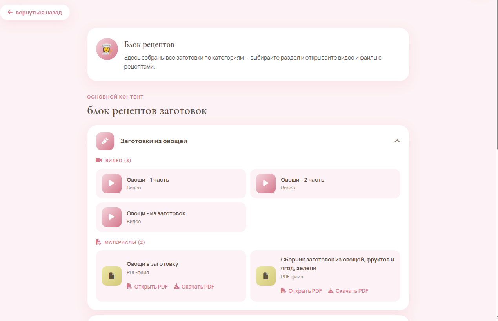

01 / ВАША ЗАДАЧА
Расходы повторяются
За конструктор приходится платить регулярно. По мере развития проекта важно понимать, как меняются тарифы и условия.
Создаём закрытые платформы для блогеров, продюсерских команд и сообществ. Участники получают материалы внутри проекта, а защиту мы берём на себя.
Структуру, личные кабинеты и админ-панель создаём под конкретный проект — не по готовому шаблону.

Реальный экран участника из кейса «Фабрика заготовок».
Если проекту тесно в типовых решениях
Сначала разбираемся, как устроен ваш проект. Затем собираем закрытую платформу под его задачи.
Что входит в основуЗапуск, онлайн-продукт и закрытое сообщество могут работать по-разному. Платформа подстраивается под процесс — не наоборот.
За конструктор приходится платить регулярно. По мере развития проекта важно понимать, как меняются тарифы и условия.
Не каждый запуск устроен одинаково. Когда процесс не помещается в готовую схему, появляются лишние шаги.
Доступы, размещение материалов и текущие вопросы отвлекают команду от запуска и работы с участниками.
Основа проекта
Начинаем с брифа: кто ваши участники, как устроен запуск и что должно происходить внутри платформы.
Участники входят в закрытую платформу со своим доступом.
Размещаем стартовый контент в структуре вашего проекта.
Мы настраиваем доступ участников и помогаем следить за ним.
Команда видит основные рабочие разделы и состояние платформы.
Понятный порядок работы
На каждом этапе понятно, что уже готово, что нужно от вас и что будет дальше.
Разбираем продукт, участников, материалы и сценарий запуска. Это точка, от которой считаются сроки.
Срок запуска — от двух недель после брифа. Точный график согласуем после проектирования.
Спокойствие для команды и участников
Продумываем закрытый доступ, защиту медиа и размещение материалов под ваш проект. Не ставим всю платформу в зависимость от одного сервиса.
Материалы — внутри проекта. Участники получают доступ через закрытую платформу.
Данные — по правилам. Соблюдаем требования 152-ФЗ при обработке персональных данных.
Платформа остаётся у вас. После приёмки передаём её команде или продолжаем администрирование по договорённости.
Закрытая платформа клуба: участники получают материалы в личном кабинете, команда работает с доступами и поддержкой оплат. Скриншоты в карусели выше — реальные экраны кейса, данные клиентов и рабочие показатели скрыты.
Кейс показывает один проект. Состав и устройство новой платформы определяются отдельно по вашему брифу.
Стоимость проекта
Ориентир для базовой интеграции
Это предварительный ориентир. Итоговый состав и стоимость фиксируем после брифа — они зависят от задач и выбранных возможностей. После передачи нет регулярной оплаты за платформу — остаются только расходы на инфраструктуру.
За согласованную базовую интеграцию платформы.
Обучение команды и поддержка после запуска включены.
Срок запуска отсчитываем после брифа.
ТЕХЦЕХ · Индивидуальные платформы для запусков